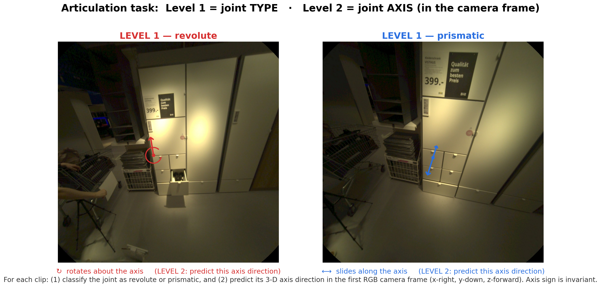
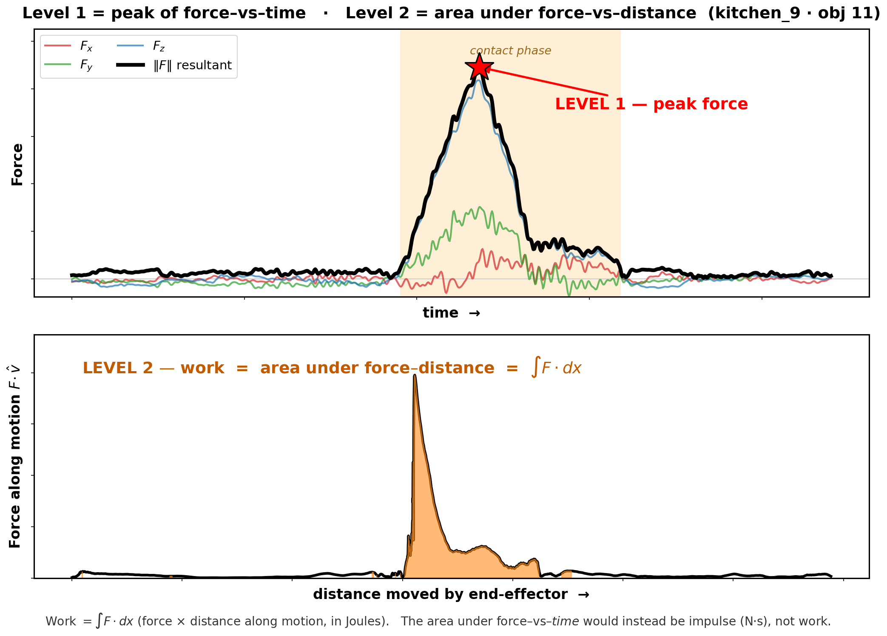

Force-Grounded, Cross-View
Articulated Manipulation
Bridging what is seen, what is done, and what is felt for multimodal, physically grounded human-robot interaction.
About the Workshop
Providing robots with the ability to manipulate articulated objects (doors, drawers, tools, containers) remains a central challenge in robotics. A key bottleneck is the lack of large-scale, multimodal datasets that simultaneously capture what is seen, what is done, and what is felt during real physical interaction. Especially touch, tactility, and force feedback are so far underrepresented in available datasets and methods, yet critical for robust robotic deployment.
This workshop brings together the manipulation, egocentric vision, and robot learning communities to discuss emerging challenges in force-grounded, cross-view articulated manipulation. As a focus point, we host a public challenge based on the Hoi! dataset, which directly addresses challenges in embodiment transfer and force-grounding by providing synchronized visual, force, and tactile streams across human and robot embodiments.
Important Dates
All deadlines are 23:59 AoE (Anywhere on Earth).
Paper Submission
| Submission opens | June 16, 2026 |
| Submission deadline | August 1, 2026 |
| Notification to authors | August 7, 2026 |
| Camera-ready deadline | August 15, 2026 |
Competition
| Competition opens | July 1, 2026 |
| Submission deadline | August 21, 2026 |
| Decisions to participants | September 1, 2026 |
Call for Papers
We welcome submissions on topics related to force-grounded manipulation, tactile sensing, and interaction understanding. The workshop accepts full-length papers (8 pages) and extended abstracts (4 pages), excluding references, in ECCV 2026 format. Authors of accepted submissions will be invited to present at the poster session. Accepted full-length papers will be included in the workshop proceedings. Submissions must be anonymized for double-blind review.
Topics of Interest
- Human-Object Interaction & articulated objects
- Force & tactile sensing for manipulation
- Egocentric video understanding
- Dexterous grasping & in-hand manipulation
- Cross-view and cross-embodiment learning
- Robot learning from human demonstration
- Force and torque prediction from video
- Physics-informed video models
- Multimodal datasets & benchmarks for manipulation
- Foundation models for robotic manipulation
- Affordance, contact estimation & action anticipation
- Embodied AI & sim-to-real transfer
Submission Guidelines
- Follow the official ECCV 2026 author kit.
- Full papers: up to 8 pages of content + unlimited pages for references. Included in proceedings.
- Extended abstracts: up to 4 pages of content + references. Non-archival.
- Submissions must be anonymized (double-blind review).
- All accepted submissions will be invited for a poster presentation; top papers may be selected for oral spotlight talks.
- All accepted authors will be asked to provide a 5-minute spotlight video for the workshop website.
Invited Speakers
Speakers will be announced soon.
Dataset Challenge
The workshop challenge is centered around the Hoi! dataset and evaluates two concrete tasks on prepared egocentric interaction clips. Both tracks use the same evaluation split: 40 object interactions from kitchen_9 and kitchen_16, organized as sequence IDs such as kitchen_9_obj1. RGB clips and public metadata are provided to participants; hidden ground truth is kept on Codabench.
T1 — Articulation Estimation
Given short head-mounted RGB clips of a human hand interacting with furniture, predict the articulation model for each interacted object.
- Input: Per-sequence RGB frames and camera intrinsics.
- Level 1: Joint type classification — revolute or prismatic (type accuracy).
- Level 2: Joint axis direction estimation, in the first RGB camera frame: x right, y down, z forward (mean / median axis angle error, sign-invariant).
T2 — Force Prediction
Given egocentric RGB clips from the gripper recording, predict scalar interaction force targets derived from the synchronized force/torque sensor.
- Input: Head-mounted aria_human RGB clips from the gripper modality.
- Level 1: Peak resultant contact force max_force_n (Newtons) — the maximum of the force magnitude over the interaction.
- Level 2: Contact-gated mechanical work work_j (Joules) — the energy transferred to the object, W = ∫ F·v dt over the contact phase: instantaneous power (force · end-effector velocity) integrated over time, i.e. force × distance moved along the motion. It rewards getting both how hard and how far right (two interactions can share a peak force but differ in work).
- Metrics: MAE (primary), median AE, RMSE, and mean relative error. Lower is better.


Evaluation Split
The prepared split contains four subsets: kitchen_9 objects 1-7 and 8-14, plus kitchen_16 objects 1-8 and 9-27. Only the first interaction window per object is evaluated.
Submission File
Upload a zip containing a single root-level file named exactly predictions.json. Do not place it inside a parent folder, and do not name it ground_truth.json.
JSON Keys
- T1: { "type": "...", "axis": [x, y, z] }
- T2: { "max_force_n": n, "work_j": j }
Workshop Schedule
Preliminary half-day program. Times will be finalized closer to the event.
Organizers